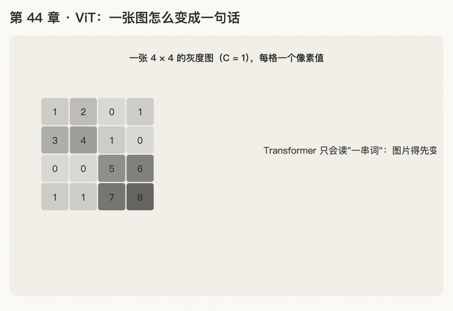

第 44 章 · ViT：把图片切成小块，当成一句话
本地运行
git clone https://github.com/wikieden/beyond-transformer
cd beyond-transformer/code/notebooks
pip install jupyterlab torch numpy
jupyter lab ch44_vit.ipynb也可以下载后直接用 VS Code 打开 .ipynb 运行。需要 GPU 的章节在 Colab 里选「代码执行程序 → 更改运行时类型 → GPU」。
本章回答：Transformer 吃的是"一串词"，图片却是一张二维的格子。怎么把图片变成一串"词"？切多大一块？ViT 为什么要海量数据才赢得过卷积网络，DeiT 又是怎么只用 ImageNet 就训出来的？
讲解日期：2026-11-18 · 上一章：第 43 章 混合架构（待写）· 下一章：第 45 章 Swin 与 ViViT
对应原文：ViTtransformer-deep-dive/materials/text/papers/vit-2010.11929.txt§3.1 L177–L216（式 1–4）、归纳偏置 L218–L224、Table 1 L273–L278、§4.3 L386–L400；DeiTdeit-2012.12877.txt§4 L245–L320（式 2、3，distillation token）、开头 L74–L95
本章缩写：ViT = Vision Transformer（视觉 / Transformer）；patch（小块：图片切出来的一小方格）；P = patch size（小块的边长，像素）；H、W = Height、Width（高、宽）；C = Channels（通道数，彩色图 RGB 是 3）；RGB = Red Green Blue（红 / 绿 / 蓝）；N = Number of patches（小块个数）；D = 每个向量的长度（同前作的 \(d_{model}\)）；\(E_{pos}\)：pos = position（位置）；[class] token（类别 / 词元：专门用来汇总整张图的那个额外的"词"）；MSA = Multi-head Self-Attention（多头 / 自 / 注意力）；MLP = Multi-Layer Perceptron（多层 / 感知机，就是前作的 FFN）；LN = LayerNorm（层归一化）；GELU = Gaussian Error Linear Unit（高斯 / 误差 / 线性 / 单元，一种激活函数）；CNN = Convolutional Neural Network（卷积 / 神经 / 网络）；JFT（Google 内部图片数据集，名字没有公开全称）；DeiT = Data-efficient image Transformers（数据 / 高效的 / 图像 / Transformer）；CE = Cross-Entropy（交叉熵，第 1 章）；KL = Kullback–Leibler divergence（KL 散度：两个分布差多远）。全部缩写见 附录 · 缩写与术语表
讲解
第一步：图片切成小块，每块当一个"词"（2026-11-18）
类比：把一张大海报裁成邮票。 一张 224 × 224 的照片，按 16 × 16 像素一格裁开，横着 14 格、竖着 14 格，一共 196 张"邮票"。把邮票从左到右、从上到下排成一行，就变成了一句 196 个"词"的话。Transformer 本来就会读一句话，这样图片就能直接喂进去。
原文（L180–L184）：把图片 \(x \in \mathbb{R}^{H \times W \times C}\) 改成一串展平的小块 \(x_p \in \mathbb{R}^{N \times (P^2 \cdot C)}\)，其中
| 符号 | 读法 | 意思 |
|---|---|---|
| \(H, W\) | H、W | 图片的高和宽（像素） |
| \(C\) | C | 通道数：彩色图有红、绿、蓝 3 层，C = 3；灰度图 C = 1 |
| \(P\) | P | 每个小块的边长：P × P 像素 |
| \(N\) | N | 一共切出几块，也就是这句话有几个"词" |
| \(P^2 \cdot C\) | P 平方乘 C | 一块里有多少个数：P × P 个像素，每个像素 C 个数 |
展平（flatten）：一块 2 × 2 的灰度小块是个小方格，把它按行读出来排成一行，就变成长度 4 的向量。彩色的 16 × 16 小块展平后是 16 × 16 × 3 = 768 个数。
数字演示（编的小图）：一张 4 × 4 的灰度图（C = 1），P = 2，切成 N = 4 × 4 / 2² = 4 块：
| 第 1 列 | 第 2 列 | 第 3 列 | 第 4 列 | |
|---|---|---|---|---|
| 第 1 行 | 1 | 2 | 0 | 1 |
| 第 2 行 | 3 | 4 | 1 | 0 |
| 第 3 行 | 0 | 0 | 5 | 6 |
| 第 4 行 | 1 | 1 | 7 | 8 |
| 块 | 位置 | 按行展平 |
|---|---|---|
| \(x_p^1\) | 左上 | [1, 2, 3, 4] |
| \(x_p^2\) | 右上 | [0, 1, 1, 0] |
| \(x_p^3\) | 左下 | [0, 0, 1, 1] |
| \(x_p^4\) | 右下 | [5, 6, 7, 8] |
切多大一块，决定句子多长（224 × 224 的彩色图）：
| P | N = (224 / P)² | 每块几个数 P²·3 | 加上 [class] 后序列长度 | 注意力分数表 (N+1)² |
|---|---|---|---|---|
| 32 | 49 | 3072 | 50 | 2500 |
| 16 | 196 | 768 | 197 | 38809 |
| 14 | 256 | 588 | 257 | 66049 |
| 8 | 784 | 192 | 785 | 616225 |
P 减半，N 变 4 倍，分数表变 16 倍。这就是原文说的"序列长度和小块边长的平方成反比，小块越小算得越贵"（L291–L292），也是前作第 23 章 \(n^2 \cdot d\) 的老问题。模型名字里的 "/16" 就是 P = 16：ViT-B/16 是 Base 尺寸、16 × 16 小块（L289–L290）。
一句话：图片按 P × P 切成 N = HW/P² 块，每块展平成 P²·C 个数，排成一句 N 个"词"的话。
第二步：线性投影 + 位置编码：小块变成向量（2026-11-18）
类比：前作第 22 章的查表，换成了"拍照打分"。 词是有编号的，查表取一行就行；小块没有编号，只有一串像素值。所以 ViT 用一个矩阵 E 把每块的 P²·C 个数乘成 D 个数，这叫线性投影（linear projection），结果叫 patch embedding（小块 / 嵌入）。
式 1（L210–L211）：
| 符号 | 意思 |
|---|---|
| \(x_p^i E\) | 第 i 块（1 × P²C）乘 E（P²C × D），得到 1 × D：这一块的向量 |
| \(x_{class}\) | 额外加在最前面的一个可学习向量（第三步讲） |
| \([\ ;\ ;\ ]\) | 分号表示上下叠起来：一共 N + 1 行 |
| \(E_{pos}\) | 位置编码：N + 1 行，每个位置一行，也是学出来的（不是前作第 14 章的 sin / cos） |
| \(z_0\) | 送进第 1 层的输入：(N + 1) × D |
原文说用最普通的"可学习的一维位置编码"，试过考虑二维的版本，没看到明显好处（L193–L195）。
数字演示：接第一步那 4 块，D = 2（论文 ViT-B 是 768）。E 是编的：第 1 列每格 0.25（算"平均亮度"），第 2 列是 [1, 1, −1, −1]（算"上半行减下半行"）：
| 块 | 展平 | 第 1 个数：4 个数 × 0.25 再加起来 | 第 2 个数：前两个 − 后两个 | \(x_p E\) |
|---|---|---|---|---|
| 1 | [1, 2, 3, 4] | 2.5 | 3 − 7 = −4 | [2.5, −4] |
| 2 | [0, 1, 1, 0] | 0.5 | 1 − 1 = 0 | [0.5, 0] |
| 3 | [0, 0, 1, 1] | 0.5 | 0 − 2 = −2 | [0.5, −2] |
| 4 | [5, 6, 7, 8] | 6.5 | 11 − 15 = −4 | [6.5, −4] |
再在最前面放 \(x_{class}\)（一开始设成 [0, 0]），加上编的位置编码 \(E_{pos}\) = [[0, 0], [0.1, 0.1], [0.2, 0.2], [0.3, 0.3], [0.4, 0.4]]：
| 行 | 来自 | + 位置 | \(z_0\) 这一行 |
|---|---|---|---|
| 0 | \(x_{class}\) [0, 0] | [0, 0] | [0, 0] |
| 1 | 块 1 [2.5, −4] | [0.1, 0.1] | [2.6, −3.9] |
| 2 | 块 2 [0.5, 0] | [0.2, 0.2] | [0.7, 0.2] |
| 3 | 块 3 [0.5, −2] | [0.3, 0.3] | [0.8, −1.7] |
| 4 | 块 4 [6.5, −4] | [0.4, 0.4] | [6.9, −3.6] |
\(z_0\) 是 5 × 2。论文尺寸：197 × 768。
这一步其实就是一个卷积：每块乘同一个 E，等于用 P × P 的卷积核、步长 P 扫一遍图片。实现时常写成 Conv2d(3, D, kernel_size=P, stride=P)。
一句话：每块展平后乘同一个矩阵 E 变成 D 维向量，前面加一个 [class] 向量，再加上学出来的位置编码，得到 (N + 1) × D 的输入。
第三步：[class] token + 一个标准的 encoder（2026-11-18）
类比：开会时专门安排一个记录员。 196 个小块各说各的，最后谁来报"这张图是猫"？ViT 在队伍最前面加一个不代表任何小块的"记录员" \(x_{class}\)。它在每一层都通过注意力听所有小块说话，最后一层它的输出就当整张图的总结（L188–L190）。这个做法照搬 BERT 的 [CLS]（第 9 章会讲 BERT）。
encoder 和前作第 21 章几乎一样（式 2–4，L212–L216）：
| 符号 | 意思 |
|---|---|
| ℓ | 第几层，从 1 到 L |
| MSA | 多头自注意力（前作第 13 章） |
| MLP | 两层的 FFN，中间用 GELU（L208），前作第 20 章 |
| LN 写在里面 | 先 LayerNorm 再进子层（Pre-LN）：和原版"先加再 LN"顺序不同，第 12 章细讲 |
| \(z_L^0\) | 最后一层（第 L 层）第 0 行，也就是 [class] 那一行的输出 |
| y | 整张图的表示，后面接一个分类头（预训练时是一层隐藏层的 MLP，微调时只是一个线性层，L190–L192） |
和前作的不同只有三点：
- 只有 encoder，没有 decoder：分类只要"读懂"，不用生成。
- 不用 causal mask（前作第 17 章）：每个小块都可以看所有小块，包括"后面"的。
- 输入是小块向量，输出只取 [class] 那一行。
ViT 的尺寸（Table 1，L273–L278）：
| 模型 | 层数 L | D | MLP 中间 | 头数 | 参数 |
|---|---|---|---|---|---|
| ViT-Base | 12 | 768 | 3072 | 12 | 86M |
| ViT-Large | 24 | 1024 | 4096 | 16 | 307M |
| ViT-Huge | 32 | 1280 | 5120 | 16 | 632M |
ViT-Base 的层数、D、头数和 BERT-Base 一样（L288）。
一句话：最前面加一个"记录员" [class]，经过 L 层 Pre-LN encoder（不遮挡），取它最后的输出接分类头。
第四步：没有"看图的常识"，所以要海量数据（2026-11-18）
类比：一个从没见过照片的人 vs 一个学过素描的人。 卷积网络（CNN）天生带着几条"看图常识"：
- 局部性（locality）：一个像素主要和旁边的像素有关；
- 平移等变（translation equivariance）：猫往右挪 10 个像素，特征图也跟着挪 10 个像素，不用重新学。
这种"还没训练就写进结构里的假设"叫 inductive bias（归纳偏置）。原文（L218–L224）说，CNN 每一层都带着这些假设；ViT 里只有 MLP 是局部的，注意力从第一层就是全局的，二维结构只在"切小块"和"调位置编码"时用了一下。
后果：ViT 要从数据里自己学会"相邻像素有关"。数据少时学不会，打不过 CNN；数据够多时，少了这些假设反而更灵活。§4.3（L386–L400）的实验：
| 预训练数据 | 规模（L258–L261） | 结果 |
|---|---|---|
| ImageNet | 1000 类，130 万张 | ViT-Large 反而不如 ViT-Base，也不如 ResNet |
| ImageNet-21k | 2.1 万类，1400 万张 | Large 和 Base 差不多 |
| JFT-300M | 1.8 万类，3.03 亿张 | 大模型的优势才完全体现 |
原文摘要的结论是"large scale training trumps inductive bias"（L73）：大规模训练胜过归纳偏置。
一句话：ViT 不带"相邻像素有关"这类看图常识，得靠海量数据自己学；数据少时打不过 CNN。
第五步：DeiT：只用 ImageNet，靠增强和"老师带"（2026-11-18）
问题：JFT-300M 是 Google 内部的数据，别人拿不到。能不能只用公开的 ImageNet（130 万张）训出好的 ViT？
DeiT 的回答：可以，一台 8 卡机器两到三天（L74–L75）。两招：
- 更强的数据增强和正则化：同一张图随机裁剪、混合（Mixup、CutMix）、重复增强（repeated augmentation）……等于凭空多造出很多"不一样"的图（§6，L636 起）。
- 知识蒸馏（distillation）：找一个已经训好的 CNN 当老师（teacher），ViT 当学生（student），学生除了学真实标签，还学老师的判断。
硬蒸馏（hard-label distillation，式 3，L265–L269）：
| 符号 | 意思 |
|---|---|
| \(Z_s\)、\(Z_t\) | 学生（s = student）、老师（t = teacher）的 logits |
| ψ | softmax |
| y | 真实标签 |
| \(y_t\) | 老师认为最可能的那一类（argmax：最大值所在的位置），当成第二个"标签" |
| CE | 交叉熵，第 1 章：−log(正确那一格的概率) |
数字演示（编的）：三类 [猫, 狗, 狐]。一张图随机裁剪后只剩一截尾巴，真实标签 y = 猫，老师看了说是狐（\(y_t\) = 狐）。学生给出概率 [0.5, 0.1, 0.4]：
| 项 | 看哪一格 | −log |
|---|---|---|
| CE(学生, 真实标签 猫) | 0.5 | 0.693 |
| CE(学生, 老师标签 狐) | 0.4 | 0.916 |
| 平均 | (0.693 + 0.916) / 2 ≈ 0.805 |
原文解释了为什么这样有用：随机裁剪后，图里可能真的已经看不出是猫了，老师的判断"跟着裁剪变"，比死板的原标签更贴合这张裁出来的图（L271–L274）。
distillation token（L300–L307）：和 [class] 一样，再往序列里加一个可学习的向量。[class] 的输出去学真实标签 y，distillation token 的输出去学老师的标签 \(y_t\)。测试时两个头的 softmax 输出加起来用（L334–L338）。
还有一种"软蒸馏"（式 2，L261）：学生的整个概率分布去贴老师的整个分布（用 KL 散度和温度 τ）。DeiT 发现硬蒸馏反而更好（L431–L433：硬蒸馏 83.0%，软蒸馏 81.8%）。
一句话：DeiT 用强数据增强 + 让学生同时学真实标签和 CNN 老师的判断（硬蒸馏，另加一个 distillation token），只用 ImageNet 就训出了好的 ViT。
动画演示：一张图怎么变成一句话

可交互版：animations/44-vit.html（需要用本地服务打开，见 animations/README.md"跑起来看"；滑块：小块边长 P 从 8 拖到 56，看 224 × 224 的图切成几块、序列多长、注意力分数表多大）。
怎么看：
- 4 × 4 小图按 2 × 2 切成 4 块，每块按行展平（第一步）；
- 每块乘 E 变成 2 个数，前面加 [class]，再加位置编码，得到 5 × 2 的 \(z_0\)（第二步）；
- 序列进 encoder，最后只取 [class] 那一行去分类（第三步）；
- 滑块：P 越小，N 越大，分数表按 N² 涨（第一步那张表）。
练习与作答记录
题 1（第一步 切小块）：CIFAR-10 的图是 32 × 32 的彩色图（C = 3），P = 4。 （a）切成几块？每块展平后有几个数？ （b）加上 [class] 后序列多长？注意力分数表多大？
题 2（第二步 线性投影）：用正文里那个 E，算小块 [2, 2, 0, 0] 的 \(x_p E\)。这一块的第 2 个数是正的，说明这块长什么样？
题 3（第三、四步）：（a）ViT 最后为什么只取第 0 行去分类？（b）用"看图常识"解释：只用 ImageNet 预训练时，为什么 ViT-Large 反而不如 ViT-Base？
题 4（第五步 硬蒸馏）：三类 [猫, 狗, 狐]，真实标签是猫，老师判断是狗，学生的概率是 [0.6, 0.3, 0.1]。硬蒸馏的 loss 是多少？（提示：−log 0.6 ≈ 0.511，−log 0.3 ≈ 1.204）
口诀
图片切成邮票块，一块就是一个词；N 等于 HW 除 P 方，块小句长算得慢。
展平乘 E 变向量，位置编码也是学。
队首安排记录员，全看不遮取它输出。
没有看图的常识，数据不够就输给卷积；DeiT 加强增强请老师，ImageNet 也能训。
本章复习卡片
必背：B04–B05（B04 切小块与式 1；B05 归纳偏置与 DeiT 硬蒸馏）。练习做完后，按答错、卡住的地方再补。
附录 · 延伸阅读
留给以后深入学习用，不影响本章主线。★ 是建议先读的。
- 本地论文的文本版在transformer-deep-dive/materials/text/papers/，表里的行号就是指这个文本版。
推荐阅读
| 读什么 | 读哪里 | 读它为了什么 |
|---|---|---|
| ★ An Image is Worth 16x16 Words（ViT，Dosovitskiy 等 2020） | §3.1 L177–L216；归纳偏置 L218–L224；§4.1 Table 1 L273–L292；§4.3 L386–L400 | 本章原文：切小块、式 1–4、[class]、模型尺寸、数据量实验 |
| ★ Training data-efficient image transformers（DeiT，Touvron 等 2020） | §4 L245–L320（式 2、3、distillation token）；§6 训练细节 L636 起 | 只用 ImageNet 训 ViT：增强、硬蒸馏、distillation token |
| ViT 附录 D.4 | 二维位置编码的对比 | 为什么一维的可学习位置编码就够了 |
| Hinton 等 2015，Distilling the Knowledge in a Neural Network | 全文（本地没有文本版） | 软蒸馏和温度 τ 的出处 |
| 前作第 13、14、21、23 章 | 多头注意力、位置编码、encoder 层、\(n^2 \cdot d\) 的复杂度 |
数学原理
- 切小块 = 卷积：每块乘同一个 E，等价于卷积核 P × P、步长 P、输出 D 个通道的卷积。
- 序列长度：\(N = HW/P^2\)；注意力代价 ∝ \(N^2\)，P 减半代价变 16 倍。
- 硬蒸馏：两个交叉熵各占一半，第二个的"正确答案"换成老师的 argmax。
- 软蒸馏：\((1-\lambda)\text{CE}(\psi(Z_s), y) + \lambda \tau^2 \text{KL}(\psi(Z_s/\tau), \psi(Z_t/\tau))\)，τ 越大分布越"软"。
公式清单
| 公式 | 意思 |
|---|---|
| \(N = HW / P^2\) | 小块个数 = 序列长度 |
| \(z_0 = [x_{class}; x_p^1 E; \dots; x_p^N E] + E_{pos}\) | 式 1：投影、加 [class]、加位置 |
| \(z'_\ell = \text{MSA}(\text{LN}(z_{\ell-1})) + z_{\ell-1}\) | 式 2：Pre-LN 注意力子层 |
| \(z_\ell = \text{MLP}(\text{LN}(z'_\ell)) + z'_\ell\) | 式 3：Pre-LN MLP 子层 |
| \(y = \text{LN}(z_L^0)\) | 式 4：取 [class] 那一行 |
| \(\mathcal{L} = \frac{1}{2}\text{CE}(\psi(Z_s), y) + \frac{1}{2}\text{CE}(\psi(Z_s), y_t)\) | DeiT 式 3：硬蒸馏 |
代码对照：把本章的数字用代码算一遍
NumPy（Numerical Python：数值 / Python，矩阵计算库）。代码在仓库本地
beyond-transformer/solutions/chapter-code/ch44_vit.py，配套测试tests/test_ch44.py，notebook 在notebooks/ch44_vit.ipynb。Mac 上直接能跑，不需要 GPU：
bash cd beyond-transformer/solutions/chapter-code uv run python ch44_vit.py # 一步一步打印 uv run pytest tests/test_ch44.py # 核对讲义里的数字
讲义 ↔ 代码：
| 讲义 | 公式 | 写法 | 跑出来 |
|---|---|---|---|
| 第一步 切小块 | \(N = HW/P^2\) | patchify(img, 2) |
4 块：[1, 2, 3, 4]、[0, 1, 1, 0]、[0, 0, 1, 1]、[5, 6, 7, 8] |
| 第一步 序列多长 | \((224/P)^2\) | seq_stats(224, 16) |
N = 196，每块 768 个数，序列 197，分数表 38809 |
| 第二步 投影 | \(x_p E\) | patches @ E |
[2.5, −4]、[0.5, 0]、[0.5, −2]、[6.5, −4] |
| 第二步 加 [class] 和位置 | 式 1 | embed(patches, E, cls, pos) |
5 × 2：第 1 行 [2.6, −3.9]，最后一行 [6.9, −3.6] |
| 第五步 硬蒸馏 | DeiT 式 3 | hard_distill_loss(p, y, y_t) |
(0.693 + 0.916) / 2 ≈ 0.805 |
关键几行：
def patchify(img, P):
H, W = img.shape[:2]
return np.array([img[i:i + P, j:j + P].reshape(-1) # 一块 P × P 按行展平
for i in range(0, H, P) for j in range(0, W, P)]) # 从左到右、从上到下
z0 = np.vstack([cls, patches @ E]) + pos # 式 1：最前面放 [class]，再加位置
loss = 0.5 * -np.log(p[y]) + 0.5 * -np.log(p[y_t]) # 硬蒸馏：两个交叉熵各一半
代码里才看得到的 2 件事：
- 彩色图的
reshape(-1)顺序是"行 → 列 → 通道"，PyTorch 的Conv2d是"通道在前"，权重摆放顺序不同，但算的是同一件事。 - 下标从 0 数：[class] 是第 0 行，所以原文写 \(z_L^0\)。
自己改一改（不影响练习答案）：
- 把
seq_stats的 P 改成 8、32，核对第一步那张表。 - 把 E 的第 2 列改成 [1, −1, 1, −1]，它算的就变成"左列减右列"，看 4 块的第 2 个数怎么变。